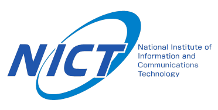
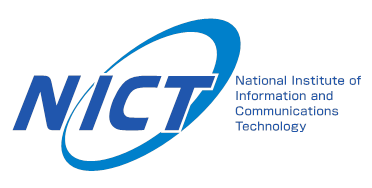
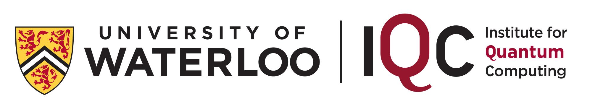

QCrypt 2016 will be held at the Carnegie Institution for Science
on Sept. 12-16, 2016 in Washington, D.C.
Scientific Program and Updated Schedule Grid
PDF of Conference Program and Updated PDF Schedule
Videos of the Talks
Organized by the
Joint Center for Quantum Information and Computer Science (QuICS)
at the University of Maryland
Announcements:
Thursday Group Photo in Hi-Resolution / Medium-Resolution
{kind=link}
{kind=link}
Instructions for Speakers and Poster Presenters
Friday: Hot Topics Session Accepted Talks
Call for Proposals to Host QCrypt 2018
Please give us feedback — take the QCrypt exit survey!
Special Event:
QCrypt Public Lecture
“Cryptography and Cybersecurity in the Quantum Era”
Michele Mosca
At the Carnegie Institution for Science
Monday, Sept. 12, at 6 p.m.
(see printable flyer and video)
Sponsors:
 



Related events:
ETSI/IQC Workshop on Quantum-Safe Cryptography
Toronto, Canada, Sept. 19-21, 2016
Next year’s QCrypt
Sept. 18-22, 2017 in Cambridge, UK
(organized by the UK Quantum Communications Hub)